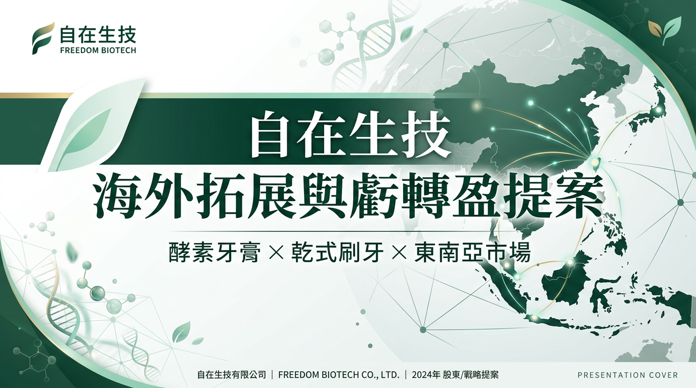

協助自在生技建立一條可執行的海外市場拓展路徑，聚焦主力 SKU、B2B 通路合作、代理 / OEM 拓展與教育型內容行銷，最終導向穩定出貨與虧轉盈。
目前最有辨識度的是酵素牙膏與乾式刷牙應用，這比一般牙膏市場更有切入點。
已有東南亞拓銷與買主接觸紀錄，代表需求不是空想。
若包裝成高齡 / 長照口腔照護解決方案，毛利與通路接受度會比純牙膏高。
| 問題 | 影響 |
|---|---|
| 品牌敘事太大 | 市場知道理念，但不一定知道你最強產品是什麼 |
| 產品線入口不夠聚焦 | 海外拓展容易分散資源，導致訊息不集中 |
| B2B / B2C 沒切清楚 | 代理商與消費者看到的訊息混在一起，影響轉換 |
| 階段 | 目標 | 工作 |
|---|---|---|
| Phase 1 | 產品聚焦 | 定主 SKU、英文定位、通路賣點 |
| Phase 2 | 招商包 | 代理頁、OEM 提案、型錄與 FAQ |
| Phase 3 | 市場驗證 | 東南亞代理洽談、試單、通路測試 |
| Phase 4 | 品牌放大 | 教育內容、社群內容、案例素材 |
自在生技最值得打的，不是泛泛的生技品牌定位，而是 酵素牙膏 × 乾式刷牙 × 特殊口腔照護 這條可被市場辨識、也可被通路接受的路線。先用產品聚焦 + B2B 通路切入，再透過教育內容放大，才有機會真正做出海外營收與虧轉盈。